Complete UI & Profile Guide
A WaterWall profile in SRP VPN Connect is a WaterWall JSON file: a list of nodes, each with a name, a type, its settings and the name of the node after it. This page walks through the screens in the order you meet them: the home screen, the profile editor, the node chain, Edit Node, Import JSON, the app's Settings and the options. The screens are the same on iPhone, iPad and Android; where Android does something else, the text says so.
Every screen title, label and message below was read from the app's source code at commit 501cc02e. Labels are quoted exactly as the app shows them.
The iPhone screenshots were taken from that code on our test iPhone 12 on 20 November 2026, each next to the same screen of the Android app. The profiles in them are examples (vpn.example.com, server.example.com, a dummy UUID), and no ping results are shown because none were measured for them.
Words used on this page
- Profile
- One saved connection in the app: a WaterWall chain and the options on this page.
- Node
- One WaterWall object in the file:
name,type,settingsand, unless it ends the chain,next, the name of the node after it.TlsClientandVlessClientare node types. - Chain
- The nodes your traffic passes through, from the input hint along each
nextto the node that has none. The server must run the matching chain. - Input hint
- The node that starts every profile:
HintConnectionINwhen the chain takes connections,HintPacketINwhen it takes IP packets. It has no settings. When the profile connects, the app puts the input chosen in Settings → WaterWall Input in its place.
Home screen
The home screen shows the title SRP VPN Connect, the connection status, a large power button and the list of your profiles.
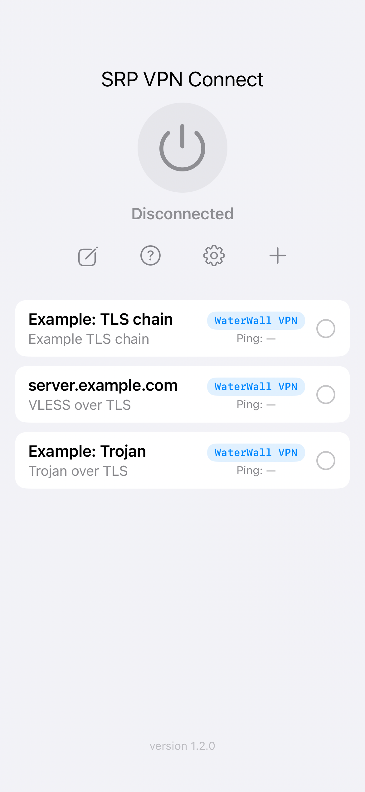
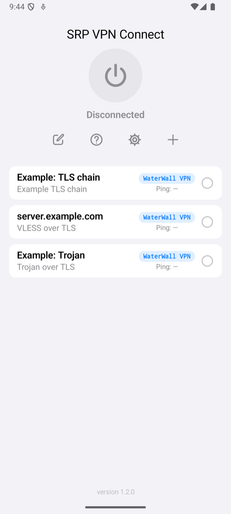
| Control | What it does |
|---|---|
| Power button | Connects the selected profile. While connecting or connected, it disconnects. The status line reads Disconnected, Connecting… or Connected. |
| Status text | Tap it to open the app's log, the first place to look when a connection fails. On iPhone, TestFlight and App Store builds keep no log of a WaterWall connection; the Android app does. |
| + (plus) | Adds a new profile. New profiles start as WaterWall. |
| Gear | Opens Settings: WaterWall Input and the GeoIP database, for every profile. |
| Pencil (edit) | Edits the selected profile. Disconnect first: while connected, the app shows Disconnect the VPN before editing this profile. With no profile selected it shows Select a profile first (or add one with +). |
| Question mark | Opens the app's website. |
| Tap a profile | Selects it for the power button. |
| Swipe a profile to the right | Shows a blue Ping button that measures that profile. |
| Swipe a profile to the left | Shows Delete. This works only while disconnected. |
| Pull the list down | Pings every profile. The list header reads Pull to ping every profile, then Pinged X of Y while it runs. |
What each profile row shows
- Title: the profile's Description, or the server name when Description is empty.
- Subtitle: the
nameof the WaterWall file, or, when it has none, the node types of the chain after the hint, for exampleVlessClient → TlsClient → TcpConnector. - Badge:
WaterWall VPN. - Ping: the last measured delay, or
Ping: —when there is none. The last results are kept when you close the app.
How ping is measured
| Profile | Method | Possible results |
|---|---|---|
| Not connected | The time of a TCP handshake to the profile's server, without the DNS lookup time. The server is the address and port of the chain's connector: the node that ends the chain, or another connector node of the file when that one has none. Up to 16 profiles are tested at once, each with a 2.5 second limit. While another VPN is up, the test uses the Wi-Fi or cellular connection directly. On Android this holds for the app's own VPN, which the app stays outside of. | TCP: N ms, TCP: Timeout, TCP: Failed, Testing… |
| Connected, iPhone and iPad | An HTTPS request through the VPN to https://gstatic.com/generate_204, then https://connectivitycheck.gstatic.com/generate_204 if the first fails. Only the answer 204 counts. It runs by itself after connecting. | Ping: N ms, Timeout, Failed |
| Connected, Android | An HTTP request through the tunnel to port 80 of the address the start-up check uses, 1.1.1.1, because the app stays outside its own tunnel. Any HTTP answer counts, and the limit is 15 seconds. It runs by itself after connecting. Without a TCP path through the chain, such as a chain that carries only UDP, it reads Failed. | Ping: N ms, Timeout, Failed |
Results are green below 200 ms, orange below 500 ms and red at 500 ms or more, or on failure.
UdpConnector or UdpStatelessSocket, such as KCP or QUIC over UDP, and a chain with no fixed server address, are skipped: the app says This profile has no TCP server to ping; connect to it to measure its delay. Connect to such a profile to see its delay. With a local proxy as the WaterWall Input, the connected ping measures the phone's own network, because the VPN then carries only the proxy's traffic.
Choosing WaterWall
The Protocol screen lists every protocol in the app, the same nine on iPhone and Android. WaterWall is first: WaterWall VPN, with the subtitle VLESS, VMess, Trojan, BGP4 and packet tunnels.
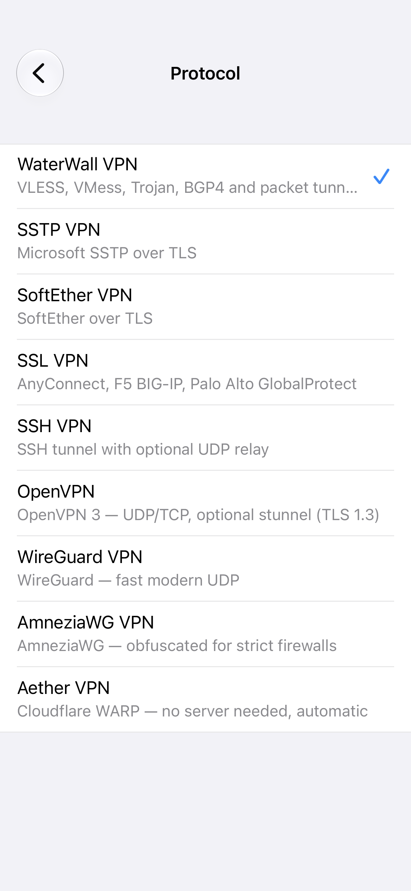
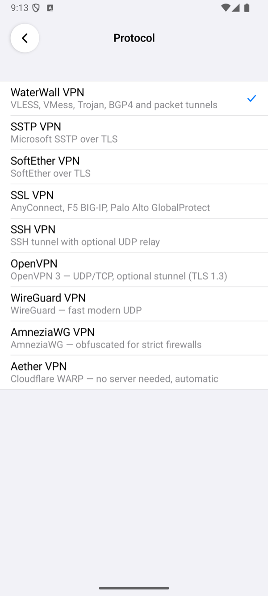
The profile editor
The editor is titled Add Profile or Edit Profile, with a ✕ (Cancel) button and Save at the top. For WaterWall it has a top section, one WaterWall row and OPTIONS. The server, the secrets and every layer of the connection are node settings in the chain, so the editor has no Server, Port, UUID or SNI rows for WaterWall.
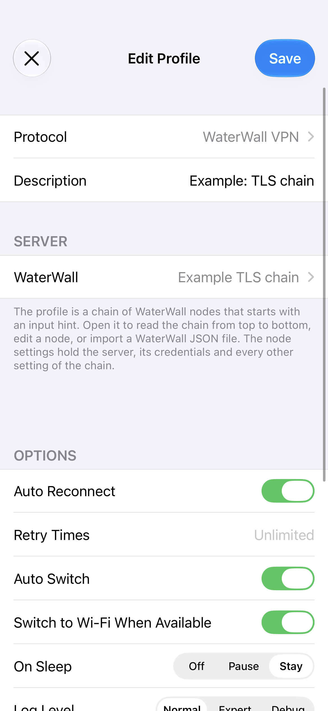
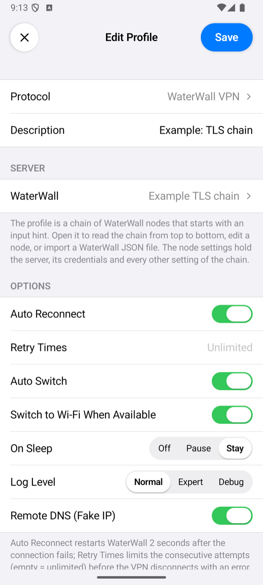
| Row | What it does |
|---|---|
| Protocol | Shows WaterWall VPN. Tap to choose another protocol (see the warning above). |
| Description | Optional. A name for the profile in the home list. |
| WaterWall | Shows the same summary as the home list. Tap it to open the node chain. |
Saving
Changes on the WaterWall screens go to the profile you are editing; Save keeps them and ✕ drops them. Save checks the chain with the same rules as Import JSON, and shows the first problem in an alert titled Invalid WaterWall Configuration. A new profile is only the input hint, so before its first Save you import a file or insert nodes; until then the alert says The input hint "input" has no next node: import a WaterWall profile or insert a node after it.
The node chain
Tapping WaterWall opens a screen titled WaterWall. Its NODE CHAIN section starts at the input hint and follows each next, one row per node, whatever order the nodes have in the file. Each row shows its number, the node's type and, below it, its name; the last row is marked End, a label of the screen that is not in the file. The note under the section says Order follows each node's next field. When the file has nodes that are not on this path, such as a Router's targets, the note also says how many; they stay in the profile as they are.
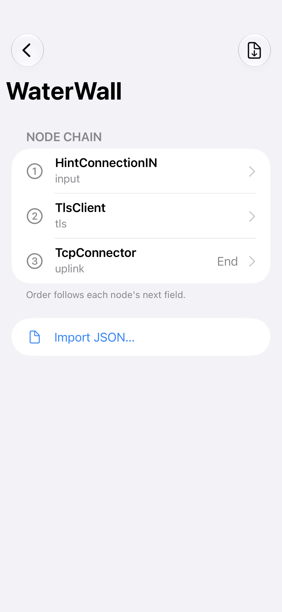
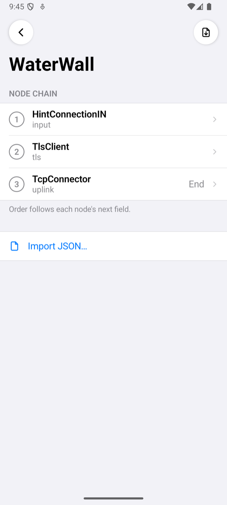
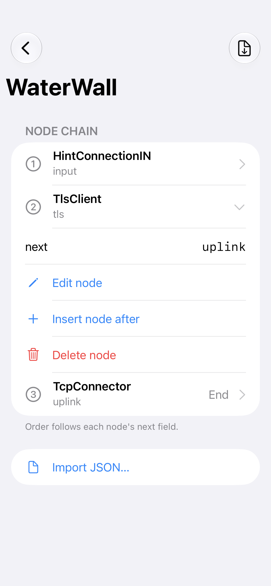
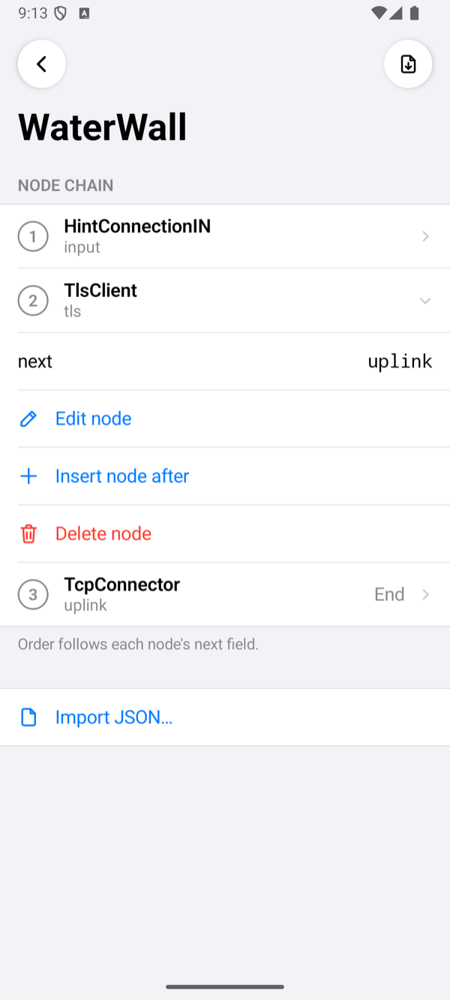
Tap a row to open it, and again to close it. An open row shows:
| Row | What it does |
|---|---|
| next | The name of the node after this one. The node that ends the chain has none. |
| Edit node | Opens Edit Node for this node. |
| Insert node after | Opens Insert Node. The new node goes between this node and the one after it: this node's next names the new node, and the new node's next names the former successor. After the last node, the new node ends the chain. |
| Delete node | Removes the node at once and links the node before it to the node after it. When the deleted node ended the chain, the node before it loses its next and ends the chain. The input hint has no Delete. A deletion that would leave an invalid chain is refused with the alert Node Not Deleted and the reason. |
Import JSON… under the chain, and the document button at the top right, open Import JSON.
Edit Node and Insert Node
The page is titled Edit Node or Insert Node, with the node's type in large letters, a NODE section and a SETTINGS section, and Save at the top.
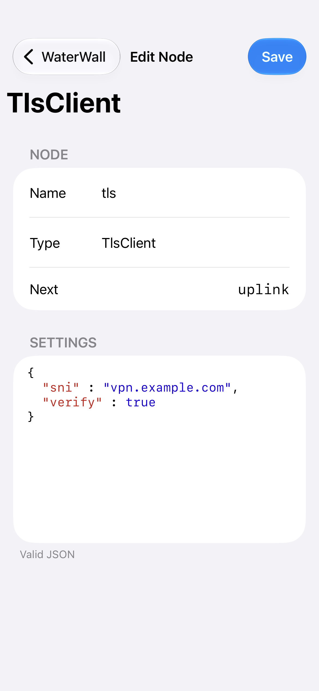
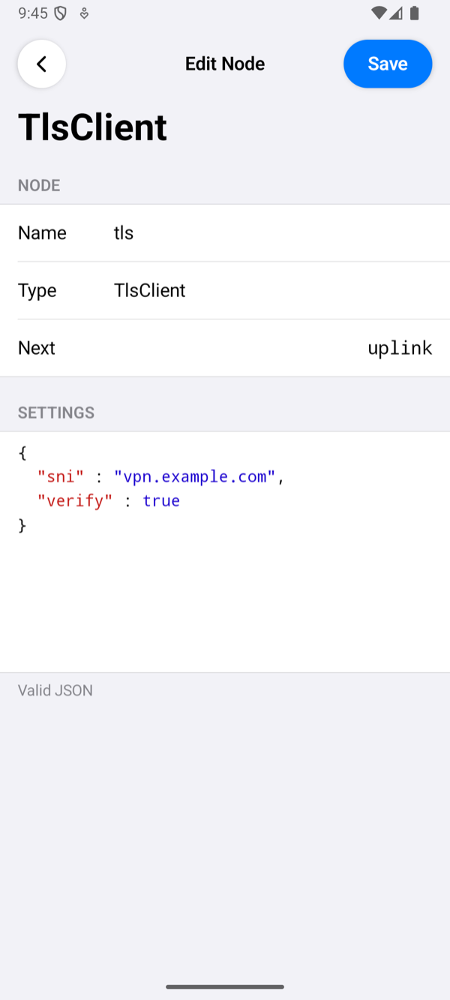
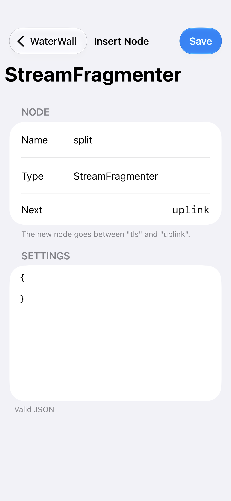
tls, on iPhone.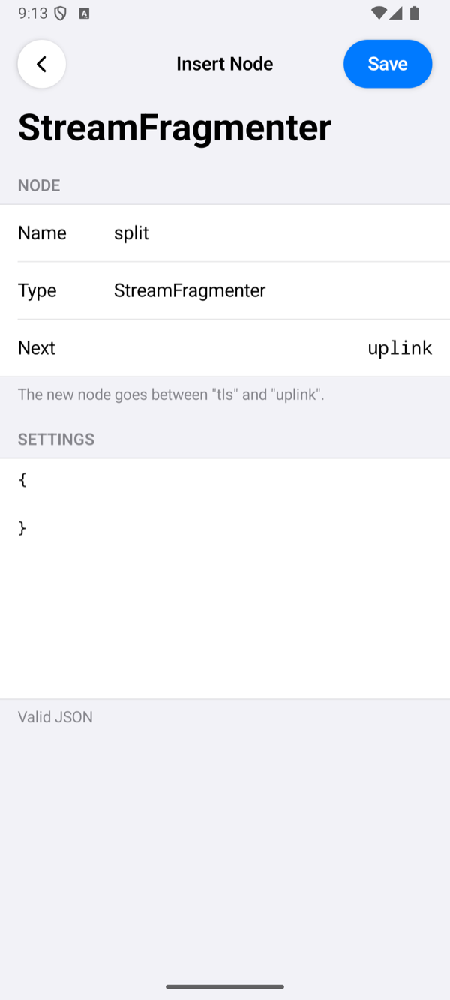
| Row | What it does |
|---|---|
| Name | The node's name. Renaming a node also renames the next that pointed to it, so the chain stays linked. |
| Type | The WaterWall node type, such as TlsClient, spelled as WaterWall spells it. |
| Next | Shown when the node has a next. It changes through Insert node after and Delete node on the chain. |
| SETTINGS | The node's settings as JSON text: keys in red, values in blue. The line under it says Valid JSON or, in red, where the error is, for example Line 3, column 3: …. Return keeps the indentation and indents one more step after { or [. Automatic corrections, capitals and curly quotes are off, so what you type stays JSON. Empty text means no settings. |
An input hint has no SETTINGS section; its note says An input hint has no settings: SRP puts the input chosen in Settings → WaterWall Input in its place when it connects. Its type says what the chain takes: HintConnectionIN connections, HintPacketIN IP packets. On Insert Node the note says where the new node goes, for example The new node goes between "tls" and "uplink".
Save keeps the other nodes and every key you did not change. Settings that are not a JSON object are refused with the alert Invalid Node Settings; a change that breaks the chain's rules is refused with Invalid Node and the reason, and the profile stays as it was. Which keys each node type takes is WaterWall's own reference; the Configuration Reference lists the node types the app's WaterWall includes and the chains we tested.
Import JSON
Import JSON reads a plain WaterWall .json file chosen with Choose File (the Files app, or on Android the system's file picker). Its IMPORT RULES say what the file needs. A file that passes shows its name and, under it, how many nodes are on its chain, for example Example TLS chain: 3 nodes on the chain. Import replaces the profile's chain. Import then replaces the chain of the profile you are editing.
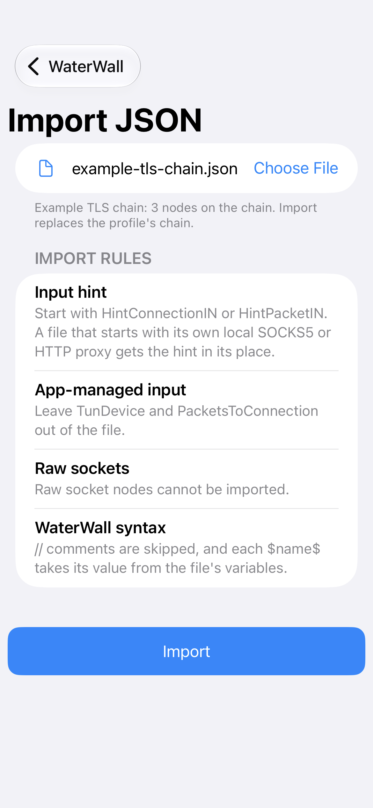
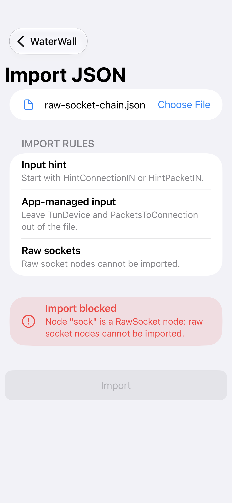
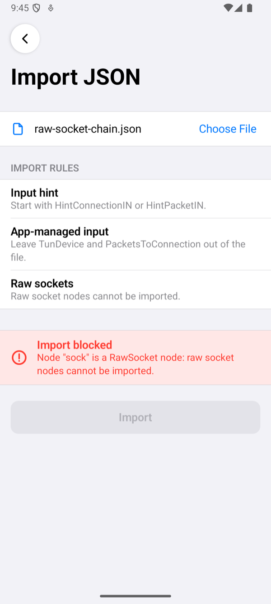
A file that breaks a rule is not imported at all: a red Import blocked banner gives the reason, Import stays off, and the profile keeps its chain. The same rules apply when you edit a node and when you save the profile.
| Message | What to fix |
|---|---|
| Node "<name>" is a RawSocket node: raw socket nodes cannot be imported. | The file has a RawSocket node, on the chain or anywhere else in nodes. The app does not run raw sockets. |
| Node "<name>" is a TunDevice node: SRP supplies TunDevice and PacketsToConnection itself when it connects, so leave them out of the profile. (or a PacketsToConnection node) | Remove the input part of the client chain and start it with an input hint instead; the app adds that part when it connects. |
| The chain must start with an input hint: HintConnectionIN or HintPacketIN. | Add a hint whose next names the first node of your chain. |
| The profile has more than one input hint ("a" and "b"); it needs exactly one. | Keep one hint. |
| The input hint "<name>" has settings, but a hint takes none. | Make its settings empty, {}. |
| The input hint "<name>" has no next node: import a WaterWall profile or insert a node after it. | The chain has nothing after the hint. |
| Node "<a>" names "<b>" as next, but no node has that name. | Fix the next or add the missing node. |
| Following next from "<a>" comes back to "<b>": the chain has a cycle. | A next points back up the chain. |
| Node "<a>" points to the input hint "<b>", which must start the chain. | No next may name the hint. |
| Two nodes are named "<name>": every node needs a name of its own. | Rename one of them. |
| Node N has no name., Node "<name>" has no type., The settings of node "<name>" are not a JSON object., The next of node "<name>" is not a node name., Node N is not a JSON object. | Each node needs a non-empty name and type; settings must be an object and next a string. |
| The file is not valid JSON., The file is not a WaterWall profile: it has no "nodes" list., The file is not UTF-8 text., The file is larger than 1 MB., The file could not be read. | Choose a plain WaterWall JSON file. Compressed files are not read. |
The example below is a complete file the app imports. Its nodes are listed out of order on purpose: the screen still shows HintConnectionIN → TlsClient → TcpConnector.
{
"name": "Example TLS chain",
"nodes": [
{ "name": "input", "type": "HintConnectionIN", "settings": {}, "next": "tls" },
{ "name": "uplink", "type": "TcpConnector", "settings": { "address": "vpn.example.com", "port": 443 } },
{ "name": "tls", "type": "TlsClient", "settings": { "sni": "vpn.example.com", "verify": true }, "next": "uplink" }
]
}Settings
The gear on the home screen opens Settings, with Done at the top. Its two sections apply to every WaterWall profile.
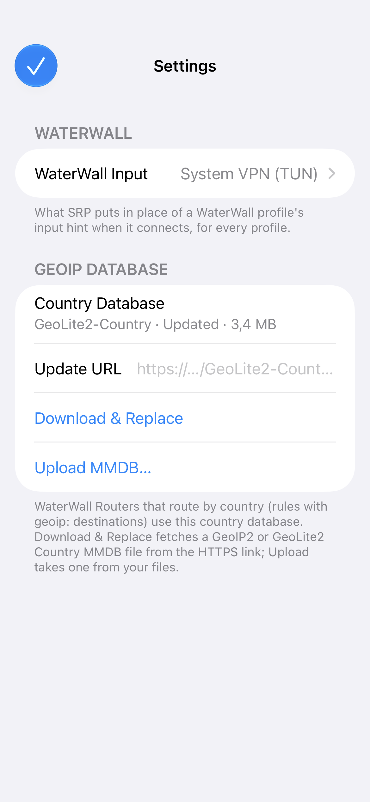
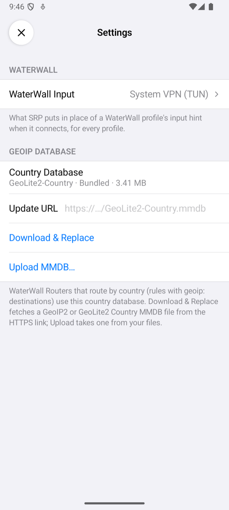
WaterWall Input
WaterWall Input opens a screen with one choice for all WaterWall profiles: System VPN (TUN) (the default), Local SOCKS5 proxy or Local HTTP proxy. The profiles keep their hint; the choice decides what the app puts in its place when a profile connects, and a change applies the next time a profile connects. The screen shows what the app adds for each hint.
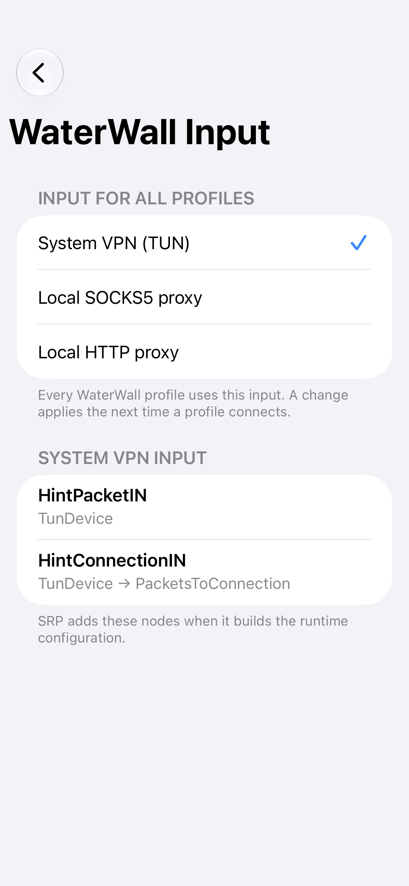
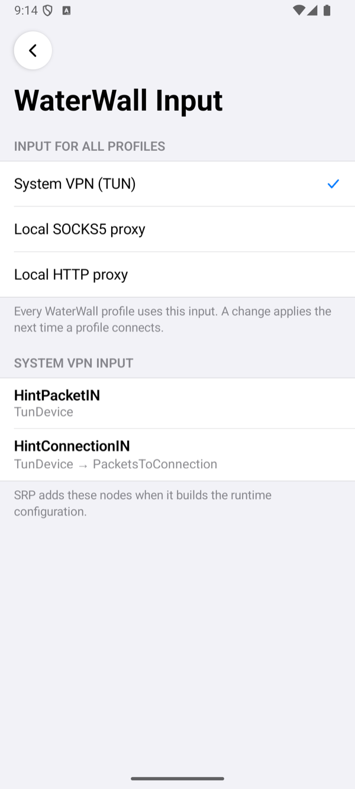
| Input | Hint in the profile | What the app adds when it connects |
|---|---|---|
| System VPN (TUN) | HintPacketIN | The VPN's packet device, linked to the hint's next. All of the phone's IPv4 traffic goes into the chain as packets. |
HintConnectionIN | The packet device, then PacketsToConnection, which turns the packets into TCP and UDP connections, linked to the hint's next. | |
| Local SOCKS5 proxy | HintConnectionIN | TcpUdpListener on 127.0.0.1:1080, then Socks5Server (no login, CONNECT and UDP ASSOCIATE), linked to the hint's next. |
| Local HTTP proxy | HintConnectionIN | TcpListener on 127.0.0.1:8080, then HttpProxyServer (no login, CONNECT and plain HTTP), linked to the hint's next. |
With a local proxy, the VPN starts but carries no other traffic and leaves the phone's DNS alone: only apps that you set to use the proxy at that address go through WaterWall. The app then checks the connection through the proxy itself, as such an app would. A HintPacketIN profile takes IP packets, which a proxy does not supply, so it does not connect with a local proxy: This profile starts with HintPacketIN, which takes IP packets, but the local SOCKS5 and HTTP proxies supply connections. Choose System VPN (TUN) in Settings → WaterWall Input to use it. When another app already uses the port, the app says 127.0.0.1:1080 is in use by another app, so the local SOCKS5 proxy cannot listen there. Stop that app's proxy or choose another input in Settings → WaterWall Input.
GeoIP Database
A WaterWall Router node can route by country with rules whose destination is geoip: and a country code, for example "destination-ip": ["geoip:ir"]. Those rules use the country database in this section; when such a profile connects, the app points the Router at it.
| Row | What it does |
|---|---|
| Country Database | Shows the database type, where it came from (Bundled or Updated) and its size, or No valid database. |
| Update URL | An HTTPS link to a GeoIP2 or GeoLite2 Country database (.mmdb), saved when you finish typing. |
| Download & Replace | Downloads the database from the Update URL. |
| Upload MMDB… | Picks a database file from the Files app, or on Android from the system's file picker. |
A new database is checked before it replaces the old one; if the check fails, the old one stays. Files must be MaxMind Country databases no larger than 128 MB. After a successful update the app says The country database was validated and installed. Reconnect WaterWall to use the new file. Saving a chain with a country rule installs the database that comes with the app if there is none yet. Country data is GeoLite2 by MaxMind.
Profiles saved by earlier versions of the app
Earlier versions of the app built the chain from a form (Application, Outer, Carrier and so on). The first time the app reads such a profile, it turns it into the chain it used to build from those settings, with the input hint in front, and keeps that chain from then on. The server, the UUID or password, the SNI, the TLS fragmentation sizes, GeoIP countries, the DNS resolver and Direct LAN Routing become node settings of the chain; open the chain to see or change them. A GeoIP update link the profile had becomes the Update URL in Settings when that is still empty. A profile in the form's WireGuard mode becomes a WireGuard profile with the same keys, connecting to the Endpoint of its imported file. A profile the form could not connect, such as one without its UUID, keeps its old settings and starts with only the input hint, until you import or build a chain for it.
OPTIONS
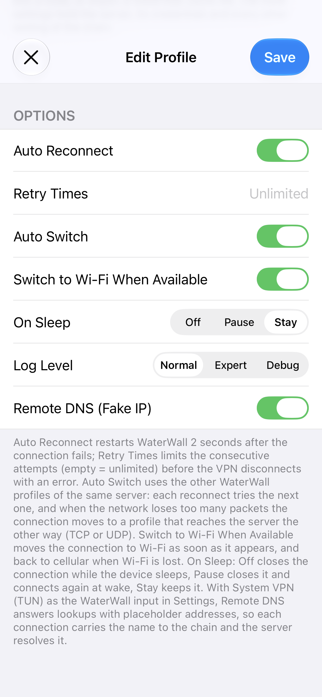
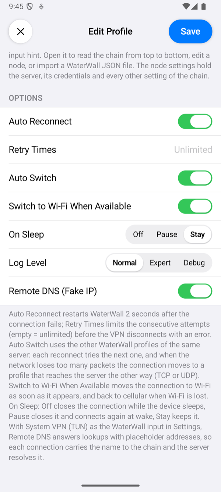
| Option | Default | What it does |
|---|---|---|
| Auto Reconnect | On | Restarts WaterWall 2 seconds after the connection fails. When off, the first failure ends the VPN. A failure is: WaterWall stopping, the start-up check failing (the app tries the server for up to 30 seconds), or no traffic passing during a 15-second health check. |
| Retry Times | Empty (unlimited) | Shown with Auto Reconnect. How many reconnects in a row before giving up with Could not reconnect after N attempts. The count restarts after a good connection, a network change or waking up. |
| Auto Switch | On | Shown when the chain has a fixed server address. Uses your other WaterWall profiles for the same server (up to 8, matched by that address) as fallbacks. Each reconnect tries the next one. When the network loses many packets, it moves to a profile that reaches the server the other way (TCP or UDP). A profile with exactly the same chain is not used. |
| Switch to Wi-Fi When Available | On | Restarts the connection on Wi-Fi as soon as Wi-Fi appears, and on cellular when Wi-Fi is lost. This is also what returns Auto Switch to the profile you chose. |
| On Sleep | Stay | Stay keeps the connection open while the phone sleeps. Pause closes it and always reconnects on wake. Off closes it; on wake it reconnects only with Auto Reconnect, otherwise the VPN ends with The connection was closed while the device slept. On Android, the phone sleeping means the screen going off, and waking means the screen coming on. |
| Log Level | Normal | How much the app and WaterWall write to their logs: Normal, Expert or Debug. On iPhone it matters only in Debug builds made for testing, because TestFlight and App Store builds keep no log of a WaterWall connection. |
| Remote DNS (Fake IP) | On | Shown for a HintConnectionIN chain, and used with System VPN (TUN) as the input. The phone gets placeholder addresses for names, so each connection carries the name into the chain, and the server, or a DomainResolver node in the chain, looks it up. When off, the phone asks 1.1.1.1 and 1.0.0.1 itself. |
On Android
Everything above applies to Android too. The few things Android does differently, such as the Connection request and the always-on setting, are on the Android page.
What the app does not have
- No export of WaterWall profiles, and no share links (such as
vless://) or QR codes. A profile comes in as a plain WaterWall JSON file, or is built node by node. - No raw socket nodes, and no TunDevice or PacketsToConnection of your own: the app supplies the input.
- No IPv6 inside the tunnel. The WaterWall tunnel carries IPv4 only.